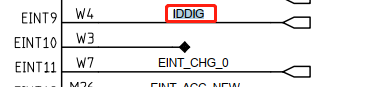
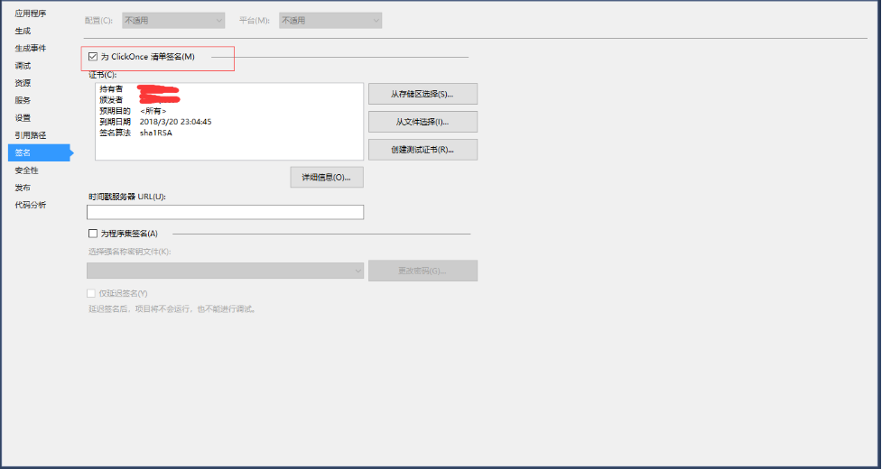

简述
WPF前期自学的一些学习记录
参考博客
https://www.cnblogs.com/zeroone/tag/C%23/
记录
背景渐变色
<Grid.ColumnDefinitions>
<ColumnDefinition Width="53*"/>
<ColumnDefinition Width="93*"/>
</Grid.ColumnDefinitions>
<Grid.Background>
<LinearGradientBrush>
<GradientStop Color="#FF73A05E" Offset="0.367"/>
<GradientStop Color="White" Offset="1"/>
<GradientStop Color="#FF6EBF61" Offset="2"/>
</LinearGradientBrush>
</Grid.Background>
TextBox加上滚条
VerticalScrollBarVisibility="Visible"
adb使用
Process p = new Process();
p.StartInfo.FileName = "cmd.exe";
p.StartInfo.UseShellExecute = false;//是否使用操作系统shell启动
p.StartInfo.RedirectStandardInput = true;//接受来自调用程序的输入信息
p.StartInfo.RedirectStandardOutput = true;//由调用程序获取输出信息
p.StartInfo.RedirectStandardError = true;//重定向标准错误输出
// p.StartInfo.CreateNoWindow = false;//不显示程序窗口
p.StartInfo.CreateNoWindow = true; //设置不显示窗口
p.Start();//启动程序
p.StandardInput.WriteLine("adb root");//目录装到C盘
p.StandardInput.WriteLine("exit");//结束标志
output = p.StandardOutput.ReadToEnd();//获取cmd窗口的输出信息，即便并无获取的需要也需要写这句话，不然程序会假死
TextBox1.Text = output;
p.WaitForExit();//等待程序执行完
p.Close();//退出进程
System.Diagnostics.Process p = new System.Diagnostics.Process();
p.StartInfo.UseShellExecute = false;
p.StartInfo.CreateNoWindow = true;
p.StartInfo.FileName = "cmd.exe";
p.StartInfo.Arguments = "/c adb shell" + " " + "\"" + "find /sys/devices/platform -name mt_gpio" + "\"";
p.StartInfo.RedirectStandardError = true;
p.StartInfo.RedirectStandardInput = true;
p.StartInfo.RedirectStandardOutput = true;
p.Start();
string outtr = p.StandardOutput.ReadToEnd();
MessageBox.Show(outtr);
给字符转将双引号
String str = "字符串";
str = "\"" +str+ "\"";
System.out.println(str);
判断Combobox清空值
if (comboBox1.SelectedIndex != -1)
字符串过滤去除换行回车符号
string l_strResult = 你的字符串.Replace("\n", "").Replace(" ","").Replace("\t","").Replace("\r","");
过滤如下字符串方法：
例如：
M50:/ # systool get imei
read:
imei0 is 123456789022222
imei1 is 123456789022222
imei2 is 000000000000000
imei3 is 000000000000000
[SYSTOOL:0] ok
方法：
outtr = outtr.Replace("read:", "");
outtr = outtr.Replace("imei0 is ", "");
outtr = outtr.Replace("imei1 is ", "");
outtr = outtr.Replace("imei2 is ", "");
outtr = outtr.Replace("imei3 is ", ""); //先把字母都过滤掉
ImeiArrayStr = outtr.Split(new string[] { "\r\n", ":" }, StringSplitOptions.RemoveEmptyEntries); //将字符串以"\r\n", ":"分隔成字符串
Imei_Select_String = ImeiArrayStr[Convert.ToInt32(SelectedImei)];//得到字符串数组
ImeiText.Text = Imei_Select_String;
TextBox文本框中如何换行
首先设置可多行
this.TextBox1.Multiline=true;
换行
this.TextBox1.Text="加入此换行符即可换行" + "\r\n";
C# int与string转化
1、int-->string
1 int a = 15;
2 string s1 = a.ToString();
3 string s2 = Convert.ToString(a);
2、string -->int
1 string s = "18";
2 int a1 = int.Parse(s);
3 int a2;
4 int.TryParse(s, out a2);
5 int a3 = Convert.ToInt32(s);
去string除括号及括号内的内容
string GPIO_Select_Str = String.Concat(GPIO_Select_Arr);
GPIO_Select_Str = Regex.Replace(GPIO_Select_Str.Replace("（", "(").Replace("）", ")"), @"\([^\(]*\)", "");//去除括号及括号内的内容
如果只去除括号呢
GPIO_Select_String = GPIO_Select_String.Replace("(", "");
GPIO_Select_String = GPIO_Select_String.Replace(")", "");
控件设置
WPF中控件的显示与隐藏的属性是zd Visibility，它有3个枚举值 Visible, Hidden 和 Collapsed。其中Visible为可见，而 Hidden 和 Collapsed 都是隐藏，唯一不同的是 Hidden 只是隐藏，控件还占用其大小空间回；而Collapsed隐藏不占空间，有布局时原本的空间会被其他空间占据。
ctrl.Visibility = Visibility.Visible;
string型数组转整型
MODE.SelectedIndex = Convert.ToInt32(GPIO_Select_Arr[0]) - '0'; //string转整型
DIR.SelectedIndex = Convert.ToInt32(GPIO_Select_Arr[1]) - '0'; //string转整型
DOUT.SelectedIndex = Convert.ToInt32(GPIO_Select_Arr[2]) - '0'; //string转整型
DIN.SelectedIndex = Convert.ToInt32(GPIO_Select_Arr[3]) - '0'; //string转整型
DRIVE.SelectedIndex = Convert.ToInt32(GPIO_Select_Arr[4]) - '0'; //string转整型
SMT.SelectedIndex = Convert.ToInt32(GPIO_Select_Arr[5]) - '0'; //string转整型
IES.SelectedIndex = Convert.ToInt32(GPIO_Select_Arr[6]) - '0'; //string转整型
PULLEN.SelectedIndex = Convert.ToInt32(GPIO_Select_Arr[7]) - '0'; //string转整型
PULLSEL.SelectedIndex = Convert.ToInt32(GPIO_Select_Arr[8]) - '0'; //string转整型
每个字符串中间加入空格
GPIO_Select_Str_Print = Regex.Replace(GPIO_Select_Str_Print, @"(?<=.{0}).{1}", " $0"); //每个字符串中间加入空格,供打印使用
打开网页
Process.Start("https://github.com/wuguangnan110/MTK_GPIO_TOOLS");
定制图标icon

wpf怎么让Textbox只能输入数字
textbox控件里怎样让它只能输入一个字符
MaxLength="1"
打包程序
定时器学习 参考
Time = new DispatcherTimer();
Time.Interval = TimeSpan.FromMilliseconds(500);
Time.Tick += Time_Tick;
Time.Start();
void Time_Tick(object sender, EventArgs e)
{
System.Diagnostics.Process p = new System.Diagnostics.Process();
p.StartInfo.UseShellExecute = false;
p.StartInfo.CreateNoWindow = true;
p.StartInfo.FileName = "cmd.exe";
p.StartInfo.Arguments = "/c adb devices";
p.StartInfo.RedirectStandardError = true;
p.StartInfo.RedirectStandardInput = true;
p.StartInfo.RedirectStandardOutput = true;
p.Start();
string outtr = p.StandardOutput.ReadToEnd();
p.Close();
outtr = outtr.Replace("List of devices attached", "");
outtr = outtr.Replace("device", "");
outtr = outtr.Replace("\r", "");
outtr = outtr.Replace("\n", "");
if (outtr.Length == 0)
{
led.Fill = new SolidColorBrush(Colors.Red);
led.Stroke = new SolidColorBrush(Colors.Red);
if (value == 0)
{
MessageBox.Show("请连接adb设备");
value++;
}
}
else
{
led.Fill = new SolidColorBrush(Colors.Green);
led.Stroke = new SolidColorBrush(Colors.Green);
Time.Stop();
if (value == 1)
{
MessageBox.Show("找到adb设备：" + outtr);
value = 0;
}
}
}
C# Split 分隔符为字符串及空格的处理
string outtr = p.StandardOutput.ReadToEnd();
string[] ArrayStr = outtr.Split(new string[] { "\r\n", ":" }, StringSplitOptions.RemoveEmptyEntries);
截取括号里的字符串
str = System.Text.RegularExpressions.Regex.Replace(@"带括号的(ddd)字符串", @"(.*\()(.*)(\).*)", "$2");//
判断文件是否存在
string Path = Environment.CurrentDirectory + "\\Images";
if (!System.IO.Directory.Exists(Path))
{
System.IO.Directory.CreateDirectory(Path);//创建该文件夹
}
C#—–字符串中加入反斜杠
参考：
字符串前加@
const string SIM1 = @"service call iphonesubinfo 3 i32 2 | grep -o '[0-9a-f]\{8\} ' | tail -n+3 | while read a; do echo -n \\u${a:4:4}\\u${a:0:4}; done";
C#几个经常用到的字符串截取
1、取字符串的前i个字符
(1)string str1=str.Substring(0,i);
(2)string str1=str.Remove(i,str.Length-i);
2、去掉字符串的前i个字符
string str1=str.Remove(0,i);
string str1=str.SubString(i);
3、从右边开始取i个字符：
string str1=str.SubString(str.Length-i);
string str1=str.Remove(0,str.Length-i);
4、从右边开始去掉i个字符：
string str1=str.Substring(0,str.Length-i);
string str1=str.Remove(str.Length-i,i);
5 、如果字符串中有"abc"则替换成"ABC"
str=str.Replace("abc","ABC");
6、c#截取字符串最后一个字符的问题!！！！！！！！！！！！！！！！！！！！！
str1.Substring(str1.LastIndexOf(",")+1);
7、C# 截取字符串最后一个字符
k = k.Substring(k.Length-1, 1);
C# 16 进制字符串转 int的方法
outtr = outtr.Replace("reg0x75:", "");
outtr = outtr.Replace(",", "");
outtr = outtr.Replace("0x", "");
int cur_value = Convert.ToInt32(outtr, 16);
C# int 转 16进制字符
int tt = 30; //0x1E
string st = tt.ToString("X"); //st = "1E"
string st = tt.ToString("x"); //st = "1e"
增加自己写的返回函数， return null非常必要。
private string Get_MT6370_Reg_value(string Reg)
{
try
{
p.StartInfo.UseShellExecute = false;
p.StartInfo.CreateNoWindow = true;
p.StartInfo.FileName = "cmd.exe";
p.StartInfo.Arguments = "/c adb shell " + "\"" + "cat /sys/kernel/debug/rt-regmap/mt6370_pmu/reg0x" + Reg + "\"";
p.StartInfo.RedirectStandardError = true;
p.StartInfo.RedirectStandardInput = true;
p.StartInfo.RedirectStandardOutput = true;
p.Start();
string outtr = p.StandardOutput.ReadToEnd();
p.Close();
outtr = outtr.Replace("\n", "").Replace(" ", "").Replace("\t", "").Replace("\r", "").Replace(":", "").Replace("0x", "").Replace(Reg, "").Replace("reg", "").Replace(",", "");
return outtr;
}
catch
{
MessageBox.Show("请连接手机adb");
}
return null;
}
adb shell一条多个命令
例如：
adb shell "cat /sys/kernel/debug/rt-regmap/mt6370_pmu/reg0xa4 && cat /sys/kernel/debug/rt-regmap/mt6370_pmu/reg0xa5"
reg0xa4:0x00,
reg0xa5:0x96,
代码如下：
p.StartInfo.UseShellExecute = false;
p.StartInfo.CreateNoWindow = true;
p.StartInfo.FileName = "cmd.exe";
p.StartInfo.Arguments = "/c adb shell " + " " + "\"" + "cat" + " /sys/kernel/debug/rt-regmap/mt6370_pmu/reg0xa4" + " && " + "cat" + " /sys/kernel/debug/rt-regmap/mt6370_pmu/reg0xa5" + "\"";
p.StartInfo.RedirectStandardError = true;
p.StartInfo.RedirectStandardInput = true;
p.StartInfo.RedirectStandardOutput = true;
p.Start();
string outtr = p.StandardOutput.ReadToEnd();
p.Close();
如何取字符串中某个字母前的字符串：
C:\Users\wugangnan>adb shell cat /sys/class/mtk-adc-cali/mtk-adc-cali/AUXADC_read_channel
[ 0, 531, 198]- ADC_RFTMP-
[ 1, 590, 219]- ADC_APTMP-
[ 2, 427, 161]-ADC_LCM_VOLTAGE-
[ 3, 25, 18]- -
[ 4,2162, 776]- -
[ 5, 0, 9]- -
[ 6, 0, 9]- -
[ 7, 0, 9]- -
[ 8, 0, 9]- -
[ 9, 0, 9]- -
[10,3546,1268]- -
[11,3552,1270]- -
[12, 0, 9]- -
[13, 0, 9]- -
[14, 0, 9]- -
[15, 0, 9]- -
-->REG:0x781a09e5,GAIN: 131,GE_A: 642,OE_A: 485,GE: 130,OE: -27
代码修改如下：
int index = outtr.IndexOf('L') - 9; //先定位到L前面9个单位的位置
string adc_value = outtr.Substring(index, 3); //取3个单位
int value = Convert.ToInt32(adc_value); //转换成int型
编译报错不签名
打印：No certificates were found that met all the given criteria
解决方案：
打开项目->属性->签名，去掉为 ClickOnce 清单签名即可。

C#中string类使用Remove方法来移除指定位置的字符
举例，字符串string strA="ABCDEFG";
（1）移除从第4个字符开始后面的所有字符串可使用下列语句
string result=strA.Remove(3);//索引从0开始，第一个字符代表0
（2）从第4个字符开始，并且往后移除3个字符，可使用下列语句
string result=strA.Remove(3，3);//索引从0开始，第一个字符代表0
快捷键说明
1.注释头
在 VS 中，对类或者方法添加 C# 注释头很简单，只需要在类或者方法的上一行输入”///” 即可自动补全：